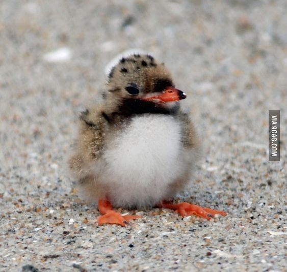

Santa Elena has the tallest cliffs forming the canyon wall—up to 1,500 feet.
Two miles into the canyon, the largest rapid, the Rock Slide is classified as a Class IV rapid at certain water levels.
For many miles upstream the river is trapped beneath the high walls, eventually emerging into a wider valley at the small town of Lajitas.
Cattail Falls
Cattail Canyon is a major ravine on the west side of the Chisos Mountains in Big Bend National Park, starting in the high country over 6,000 feet and descending steeply to the desert plains below.
Only the lowest section of the canyon is easily visited, by the 1.5 mile Cattail Falls Trail, which crosses undulating hills and enters a dense patch of woodland enclosing a small stream that flows through a enchanting series of pools from the base of an 80 foot waterfall.
Partly to protect the fragile environment by limiting visitor numbers, the trail to the falls is not marked on the NPS map of the national park, and the trailhead is not signed from the highway.
Lost Mine Trail
This trail serves as an outstanding introduction the flora and fauna of the Chisos Mountains.
With limited time, hike to marker 10 (about 1 mile), where a saddle offers stunning views of Casa Grande and Juniper Canyon.
The remainder of the trail climbs steeply in and out of juniper, oak, and pine forest.
The trail abruptly levels out at the ridge with superb views of Pine Canyon and the Sierra del Carmen in Mexico.

TidBits
Yellowstone
Yellowstone encompasses 3,472 square miles (2,221,766 acres) which makes it larger than Rhode Island and Delaware combined.
There are more than 10,000 hydrothermal features in Yellowstone. The four types of thermal features are geysers, hot springs, mud pots, and fumaroles.
Yellowstone Lake has 131.7 sq. miles of surface area and 141 miles of shoreline. It is the largest high elevation lake in North America.
285 species of birds can be found in Yellowstone (150 nesting).
Grand Canyon
It has long been believed that the Colorado River began carving the Grand Canyon about 6 million years ago, but a 2012 study contained a real shocker, suggesting that the process may have begun as far back as 70 million years.
Sudden changes in elevation have an enormous impact on temperature and precipitation, so the weather you're experiencing could vary drastically depending on where you are in the Grand Canyon.
FISH ARE RELATIVELY UNCOMMON IN THE GRAND CANYON
THERE'S A TOWN IN THE GRAND CANYON
Congaree National Park
Congaree has the largest old-growth bottomland hardwood forest in the U.S.
For a month in early summer, between the end of May and the start of June, thousands of fireflies simultaneously light up each night at exactly the same time for a magical natural show.